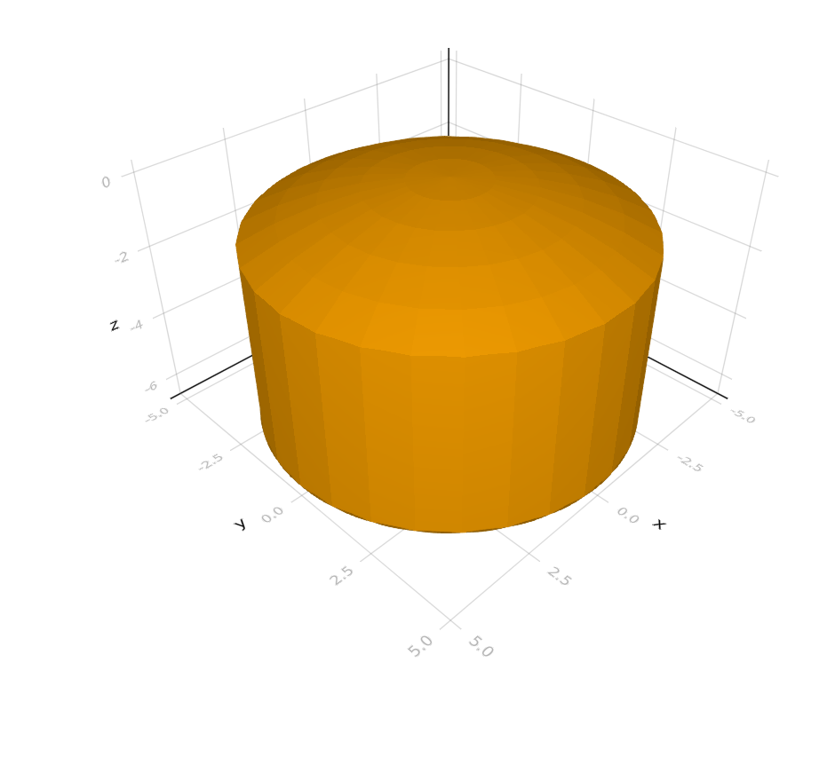

OpticSim.jl
OpticSim.jl is a Julia package for simulation and optimization of complex optical systems developed by the Microsoft Research Interactive Media Group and the Microsoft HART group.
It is designed to allow optical engineers to create optical systems procedurally and then to simulate and optimize them. Unlike Zemax, Code V, or other interactive optical design systems OpticSim.jl has limited support for interactivity, primarily in the tools for visualizing optical systems.
A large variety of surface types are supported, and these can be composed into complex 3D objects through the use of constructive solid geometry (CSG). A complete catalog of optical materials is provided through the complementary GlassCat submodule.
This software provides extensive control over the modelling, simulation, visualization and optimization of optical systems. It is especially suited for designs that have a procedural architecture.
Installation
Install the Julia programming language from the official download page. OpticSim.jl is optimized for use with Julia 1.5.2-1.6.0; using other versions may result in reduced performance.
The system will automatically download glass catalog (.agf) files from some manufacturers when the package is built for the first time. These files are in an industry standard format and can be downloaded from many optical glass manufacturers.
Here are links to several publicly available glass files:
- NIKON (automatically downloaded)
- NHG (you have to manually download)
- OHARA (automatically downloaded)
- HOYA (automatically downloaded)
- Sumita (automatically downloaded)
- SCHOTT (automatically downloaded)
OpticSim.jl will generate a glass database from the available files in deps/downloads/glasscat/ and store it in the file AGFClassCat.jl. See GlassCat for a detailed description, including instructions on how to add more catalogs.
Run this example to check that everything installed properly:
using OpticSim
Vis.draw(SphericalLens(OpticSim.GlassCat.SCHOTT.N_BK7, 0.0, 10.0, 10.0, 5.0, 5.0))
System Image
We recommend compiling a custom Julia system image for the OpticSim.jl package to reduce startup time and improve first-time performance. If you are using VSCode as your IDE you can create a sysimage by opening the commant palette (CTRL-shift-P), Tasks: Run Build Task, julia: Build custom sysimage for current environment.
If you are not using VSCode we have create a julia script file that will build the sysimage. To create the system image simply run:
julia --project=[your_project] -e "using OpticSim.Sysimage; Sysimage.compile()"By default, the sysimage is located in the current working directory. On Linux, it will be called JuliaSysimage.so; on Windows, the extension will be .dll. A custom path can be used instead which is passed as an argument to compile().
To use the generated system image, run Julia with the --sysimage flag:
julia --project=[your_project] --sysimage=[path_to_sysimage]If OpticSim.jl is installed in the base project then there is no need for the --project flag in the above commands.